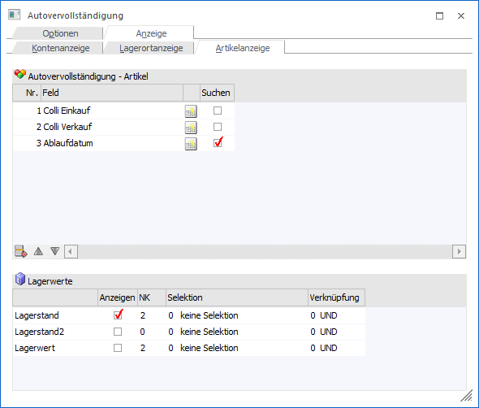
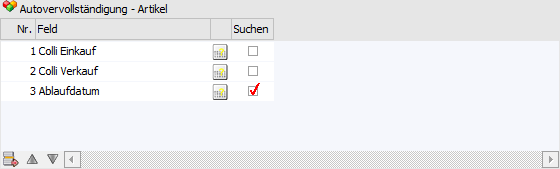
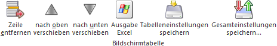
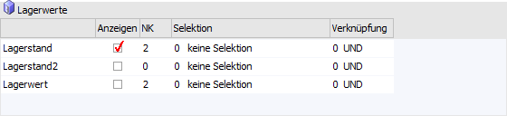
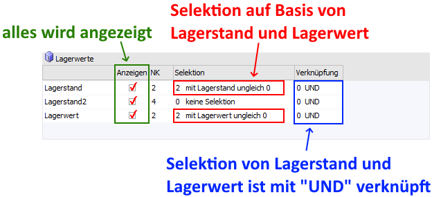

In dem Unterregister "Artikelanzeige" des Registers "Anzeige" kann der Inhalt der Autovervollständigung für das Objekt "Artikel" definiert werden. Des Weiteren steht die Möglichkeit einer Einschränkung auf Basis des Lagerstands und / oder Lagerwerts zur Verfügung.
Hinweis
Die Speicherung der Einstellungen erfolgt mandantenspezifisch und wirken im aktuellsten Wirtschaftsjahr des Mandanten. In allen anderen Wirtschaftsjahren wird die Standardanzeige (bestehen aus "Artikelnummer" und "Artikelbezeichnung") verwendet. Des Weiteren werden bei Filialmandanten automatisch die Hinterlegungen des Zentralmandanten verwendet.

Tabelle "Autovervollständigung - Artikel"

Über die Tabelle "Autovervollständigung - Lagerorte" können bis zu 5 Felder aus dem Artikelstamm für die Anzeige via Autovervollständigung ausgewählt werden. Die folgenden Felder sind dabei immer automatisch enthalten und bilden die ersten Spalten der Autovervollständigung:
ü Artikelnummer
ü Artikelbezeichnung
Hinweis 1
Es stehen alle Felder aus den Bereichen "Stammdatei" (T024), "Preise" (T023), "Texte" (T031) und "Lagereinstellungen" (T037) zur Verfügung. Variablen des Typs "Notiz" können nicht verwendet werden, Zahlenfelder werden mit 2 Nachkommastellen angezeigt und bei dem Feld "Artikeluntergruppe" wird der Name der letzten Hierarchie-Ebene dargestellt.
Hinweis 2
Werden keine zusätzlichen Felder für die Autovervollständigung in der Tabelle hinterlegt und gibt es keine Ausprägungsartikelnummer (siehe "Ausprägungsoptionen"), so werden bei Vorhandensein von Chargen- bzw. Identnummern diese automatisch als 3 Spalte in der Autovervollständigung angezeigt.
Ø neues Feld
Zur Anlage eines neuen Felds wird der Fokus in die erste freie Zeile der Tabelle gelegt. Die Auswahl des gewünschten Feld erfolgt mit Hilfe des Fensters Variable einfügen, welches durch Anwahl des Icons geöffnet wird.
Ø Feld bearbeiten
Um ein bestehendes Feld zu verändert wird das Icon angeklickt. In dem aufgehenden Fenster Variable einfügen kann anschließend eine neue Variable gewählt werden.
Ø Spalte "Suchen"
Wird die Checkbox "Suchen" aktiviert, so wird das jeweilige Feld zusätzlich (neben "Artikelnummer" und "Artikelbezeichnung") in der Suche berücksichtigt.
Hinweis
Handelt es sich um ein Feld des Typs "Datum", so muss für eine vollständige Suche das englische Format verwendet werden (d.h. "05.12.2022" kann mit "2022-12-05" gefunden werden).
Tabellenbuttons

Ø Zeile entfernen
Die aktuelle Zeile wird entfernt.
Ø nach oben verschieben
Die aktuelle Zeile wird nach oben verschoben.
Ø nach unter verschieben
Die aktuelle Zeile wird nach unten verschoben.
Ø Ausgabe Excel
Durch Anwahl des Buttons "Ausgabe Excel" wird der Inhalt der Tabelle an Microsoft Excel übergeben.
Ø Tabelleneinstellungen speichern
Die Spalten einer Tabelle können grundsätzlich an beliebige Positionen verschoben, bzw. in der Breite entsprechend angepasst werden. Durch Anwahl des Buttons "Tabelleneinstellungen speichern" werden die Einstellungen benutzerspezifisch gespeichert und bei dem nächsten Aufruf des Programmpunktes wieder vorgeschlagen.
Ø Gesamteinstellungen speichern
Im Gegensatz zu "Tabelleneinstellungen speichern" können mit "Gesamteinstellungen speichern" mehrere Tabellenaufbauten gespeichert und nach Wunsch geladen werden. Zusätzlich werden Sonderfunktionen der Tabelle (z.B. "Spalte gruppieren") ebenfalls bei der Speicherung bedacht.
Tabelle "Lagerwerte"

Neben den Standardfeldern der Autovervollständigung und den 5 zusätzlichen Feldern (siehe Tabelle "Autovervollständigung - Artikel") können zusätzlich auch Information aus den Lagerwerten angezeigt werden.
Ø Anzeigen
Mit Hilfe dieser Checkbox wird definiert, ob eine Lagerinformation (Lagerstand, Lagerstand2, Lagerwert) in der Autovervollständigung angezeigt werden soll.
Ø NK
Über die Spalte "NK" kann die Anzahl der Nachkommastellen in der Autovervollständigung definiert werden.
Ø Selektion
Erfolgt eine Anzeige der Lagerinformation, so kann mit Hilfe dieser Option eine Selektion auf Grundlage des Werts vorgenommen werden. Hierfür stehen folgende Einstellungen zur Verfügung:
ü 0 - keine Selektion
Es erfolgt
keine Selektion
ü 1 - mit Lagerstand / Lagerwert
größer 0
Es werden nur Artikel angezeigt, bei denen der Lagerstand /
Lagerwert größer 0 ist.
ü 2 - mit Lagerstand / Lagerwert
ungleich 0
Es werden nur Artikel angezeigt, bei denen der Lagerstand /
Lagerwert ungleich 0 ist.
ü 3 - mit Lagerstand / Lagerwert
kleiner 0
Es werden nur Artikel angezeigt, bei denen der Lagerstand /
Lagerwert kleiner 0 ist.
ü 4 - mit Lagerstand / Lagerwert
gleich 0
Es werden nur Artikel angezeigt, bei denen der Lagerstand /
Lagerwert gleich 0 ist.
Ø Verknüpfung
Sollte eine Selektion bei 2 oder 3 Informationen aktiviert worden sein, so müssen diese Selektionsbedingungen miteinander verknüpft werden. Hierbei steht die Option "0 - UND", sowie "1 - ODER" zur Verfügung, wobei immer alle Zeilen mit der identischen Verknüpfung verbunden werden.
Beispiel
Grundsätzlich ist es gewünscht, dass alle Informationen angezeigt werden. Artikel mit einem Lagerstand gleich 0 oder einem Lagerwert gleich 0 sollen aber nicht in der Autovervollständigung erscheinen. Der aktuelle Wert von Lagerstand2 ist bei der Selektion irrelevant.
